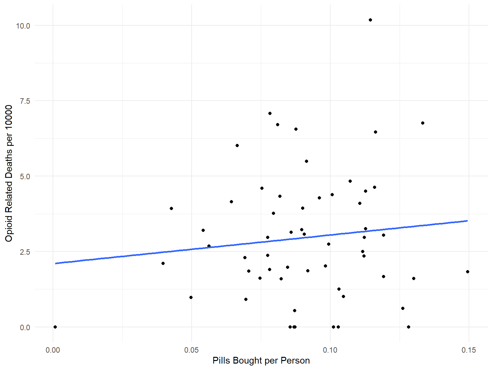

opioid_death_data = read_csv('./opioid_related_deaths.csv') %>%
janitor::clean_names()
opioid_er_data = read_csv('./opioid_related_visits.csv') %>%
janitor::clean_names()
opioid_treatment_distance = read_csv('./distance_to_treatment.csv') %>%
janitor::clean_names()
opioid_dem_df = read_csv('./data/deaths_age_group.csv') %>%
janitor::clean_names()prod_county = arcos::summarized_county_annual(state = "NY", key = "WaPo") %>%
janitor::clean_names()
county_pop = arcos::county_population(state = "NY", key = "WaPo") %>%
janitor::clean_names()# clean opioid death data #
opioid_death_data = opioid_death_data %>%
filter(year >= 2010) %>%
mutate(county = recode(county, "Kings (Brooklyn)" = "Kings",
"New York (Manhattan)" = "New York",
"St Lawrence" = "St. Lawrence"))
# clean opioid er data #
opioid_er_data = opioid_er_data %>%
select(year, patient_county_name, rural_urban, payer, er_opioid, inpatient_total_opioid, er_inpatient_total_opioid, outpatient_opioid, overall_opioid) %>%
rename(county = patient_county_name)
# Combine Data Sets #
opioid_total_data = left_join(opioid_er_data, opioid_death_data, by = c('county', 'year')) %>%
arrange(county, year)# Pills bought by Pharmacies in Each county per Year #
pharma_df = left_join(prod_county, county_pop, by = c("buyer_county", "year")) %>%
select(county_name, year, count, population) %>%
rename(county = county_name,
pills_bought = count) %>%
mutate(ppp = pills_bought/population)This exploratory analysis clusters opioid related data adjusted for population in each county
by the intercepts and slopes. This involved joining our population data with opioid related
interventions in hospitals. The intercepts and slopes were extracted from linear models.
sum_df <- opioid_total_data %>%
group_by(county, year, rural_urban) %>%
summarize(er_opioid = sum(er_opioid),
inpatient_total_opioid = sum(inpatient_total_opioid),
er_inpatient_total_opioid = sum(er_inpatient_total_opioid),
outpatient_opioid = sum(outpatient_opioid),
overall_opioid = sum(overall_opioid),
opioid_poisoning_deaths = sum(opioid_poisoning_deaths)
)join_df <- inner_join(sum_df, pharma_df, by = c("county", "year"))sum_total_df <- opioid_total_data %>%
group_by(county, year) %>%
summarize(er_opioid = sum(er_opioid),
inpatient_total_opioid = sum(inpatient_total_opioid),
er_inpatient_total_opioid = sum(er_inpatient_total_opioid),
outpatient_opioid = sum(outpatient_opioid),
overall_opioid = sum(overall_opioid),
opioid_poisoning_deaths = sum(opioid_poisoning_deaths)
)death_sales_df <- inner_join(sum_total_df, pharma_df, by = c("county", "year"))int_slope_dat <- pharma_df %>%
mutate(
year = recode(year,
"2006" = 0,
"2007" = 1,
"2008" = 2,
"2009" = 3,
"2010" = 4,
"2011" = 5,
"2012" = 6)
) %>%
group_by(county, year) %>%
summarize(ppp = pills_bought/population)int_slope_df <- int_slope_dat %>%
nest(data = year:ppp) %>%
mutate(
models = map(data, ~lm(ppp ~ year, data = .x)),
result = map(models, broom::tidy)
) %>%
select(county, result) %>%
unnest(result) %>%
select(county, term, estimate) %>%
pivot_wider(
names_from = term,
values_from = estimate
) %>%
rename(int = "(Intercept)", slope = year)km_fit =
kmeans(
int_slope_df[,c(2,3)] %>% scale,
centers = 3)
int_slope_df =
broom::augment(km_fit, int_slope_df)pills_plot <- left_join(int_slope_dat, int_slope_df) %>%
group_by(county) %>%
ggplot(aes(x = year, y = ppp, color = .cluster, text = county)) +
geom_point() +
geom_path() +
scale_x_continuous(breaks = c(0, 1, 2, 3, 4, 5, 6), labels = c("2006", "2007", "2008", "2009", "2010", "2011", "2012")) +
theme(legend.position = "none") +
xlab("Year") +
ylab("Pills Bought Per Person")ggplotly(pills_plot, tooltip = "text")death_sales_dat <- death_sales_df %>%
ungroup() %>%
mutate(
year = recode(year,
"2010" = 0,
"2011" = 1,
"2012" = 2)
)death_sales_dat <- death_sales_df %>%
select(county, year, opioid_poisoning_deaths, population) %>%
mutate(
year = recode(year,
"2010" = 0,
"2011" = 1,
"2012" = 2)
)death_int_slope_df <- death_sales_dat %>%
nest(data = year:population) %>%
mutate(
models = map(data, ~lm(opioid_poisoning_deaths/population*10000 ~ year, data = .x)),
result = map(models, broom::tidy)
) %>%
select(county, result) %>%
unnest(result) %>%
select(county, term, estimate) %>%
pivot_wider(
names_from = term,
values_from = estimate
) %>%
rename(int = "(Intercept)", slope = year)death_km_fit =
kmeans(
death_int_slope_df[,c(2,3)] %>% scale,
centers = 3)
death_int_slope_df =
broom::augment(death_km_fit, death_int_slope_df)deaths_plot <- left_join(death_sales_dat, death_int_slope_df) %>%
group_by(county) %>%
ggplot(aes(x = year, y = opioid_poisoning_deaths/population*10000, color = .cluster, text = county)) +
geom_point() +
geom_path() +
scale_x_continuous(breaks = c(0, 1, 2), labels = c("2010", "2011", "2012")) +
theme(legend.position = "none") +
xlab("Year") +
ylab("Opioid Related Deaths per 10000")ggplotly(deaths_plot, tooltip = "text")er_sales_dat <- death_sales_df %>%
select(county, year, er_opioid, population) %>%
mutate(
year = recode(year,
"2010" = 0,
"2011" = 1,
"2012" = 2)
)er_int_slope_df <- er_sales_dat %>%
nest(data = year:population) %>%
mutate(
models = map(data, ~lm(er_opioid/population*10000 ~ year, data = .x)),
result = map(models, broom::tidy)
) %>%
select(county, result) %>%
unnest(result) %>%
select(county, term, estimate) %>%
pivot_wider(
names_from = term,
values_from = estimate
) %>%
rename(int = "(Intercept)", slope = year)er_km_fit =
kmeans(
er_int_slope_df[,c(2,3)] %>% scale,
centers = 3)
er_int_slope_df =
broom::augment(er_km_fit, er_int_slope_df)er_plot <- left_join(er_sales_dat, er_int_slope_df) %>%
group_by(county) %>%
ggplot(aes(x = year, y = er_opioid/population*10000, color = .cluster, text = county)) +
geom_point() +
geom_path() +
scale_x_continuous(breaks = c(0, 1, 2), labels = c("2010", "2011", "2012")) +
theme(legend.position = "none") +
xlab("Year") +
ylab("Opioid Related ER Visits per 10000")ggplotly(er_plot, tooltip = "text")This scatter plot shows the number of opioid-related deaths per 10000 people versus the number of
pills prescribed adjusted by population.
join_df %>%
ggplot(aes(x = ppp, y = opioid_poisoning_deaths/population*10000)) +
geom_point() +
geom_smooth(method = "lm", se = FALSE) +
xlab("Pills Bought per Person") +
ylab("Opioid Related Deaths per 10000")
fit <- lm(opioid_poisoning_deaths/population*10000 ~ ppp, data = join_df)
summary(fit)##
## Call:
## lm(formula = opioid_poisoning_deaths/population * 10000 ~ ppp,
## data = join_df)
##
## Residuals:
## Min 1Q Median 3Q Max
## -3.291 -1.306 -0.328 1.035 12.876
##
## Coefficients:
## Estimate Std. Error t value Pr(>|t|)
## (Intercept) 1.1261 0.5778 1.949 0.05291 .
## ppp 15.9136 6.0201 2.643 0.00897 **
## ---
## Signif. codes: 0 '***' 0.001 '**' 0.01 '*' 0.05 '.' 0.1 ' ' 1
##
## Residual standard error: 2.056 on 172 degrees of freedom
## Multiple R-squared: 0.03904, Adjusted R-squared: 0.03345
## F-statistic: 6.988 on 1 and 172 DF, p-value: 0.008966For the purposes of this model I created a region variable that measures whether a county is in
New York City or the rest of New York State. I tested two nested stepwise models to determine
which model would be best at predicting the raw number of opioid poisoning deaths. Then, variables
in the larger model were removed starting with the highest VIF until no variables had a VIF score
greater than 10.
join_dat <- join_df %>%
ungroup() %>%
mutate(year = factor(year),
region = ifelse(county %in% c("New York", "Kings", "Bronx", "Queens", "Richmond"), "NYC", "ROS")) %>%
select(-county)
fit1 <- lm(opioid_poisoning_deaths ~ . -pills_bought
-inpatient_total_opioid -er_inpatient_total_opioid -overall_opioid, data = join_dat)
fit2 <- lm(opioid_poisoning_deaths ~ region + pills_bought + rural_urban, data = join_dat)
model1 <- step(fit1)## Start: AIC=1376.93
## opioid_poisoning_deaths ~ (year + rural_urban + er_opioid + inpatient_total_opioid +
## er_inpatient_total_opioid + outpatient_opioid + overall_opioid +
## pills_bought + population + ppp + region) - pills_bought -
## inpatient_total_opioid - er_inpatient_total_opioid - overall_opioid
##
## Df Sum of Sq RSS AIC
## - year 2 2169 431085 1373.8
## - ppp 1 2683 431599 1376.0
## <none> 428916 1376.9
## - rural_urban 1 6692 435608 1377.6
## - region 1 17597 446512 1381.9
## - outpatient_opioid 1 69363 498279 1401.0
## - population 1 162203 591119 1430.7
## - er_opioid 1 240502 669418 1452.4
##
## Step: AIC=1373.81
## opioid_poisoning_deaths ~ rural_urban + er_opioid + outpatient_opioid +
## population + ppp + region
##
## Df Sum of Sq RSS AIC
## - ppp 1 2982 434067 1373.0
## <none> 431085 1373.8
## - rural_urban 1 6814 437898 1374.5
## - region 1 17069 448154 1378.6
## - outpatient_opioid 1 75705 506790 1400.0
## - population 1 160125 591210 1426.8
## - er_opioid 1 249365 680450 1451.2
##
## Step: AIC=1373.01
## opioid_poisoning_deaths ~ rural_urban + er_opioid + outpatient_opioid +
## population + region
##
## Df Sum of Sq RSS AIC
## <none> 434067 1373.0
## - rural_urban 1 5770 439837 1373.3
## - region 1 15983 450050 1377.3
## - outpatient_opioid 1 75991 510057 1399.1
## - population 1 177648 611715 1430.7
## - er_opioid 1 248842 682909 1449.9model2 <- step(fit2)## Start: AIC=1471.03
## opioid_poisoning_deaths ~ region + pills_bought + rural_urban
##
## Df Sum of Sq RSS AIC
## - rural_urban 1 4703 784877 1470.1
## <none> 780174 1471.0
## - region 1 64678 844852 1482.9
## - pills_bought 1 2449565 3229740 1716.2
##
## Step: AIC=1470.08
## opioid_poisoning_deaths ~ region + pills_bought
##
## Df Sum of Sq RSS AIC
## <none> 784877 1470.1
## - region 1 64438 849315 1481.8
## - pills_bought 1 2755588 3540466 1730.2summary(model1)##
## Call:
## lm(formula = opioid_poisoning_deaths ~ rural_urban + er_opioid +
## outpatient_opioid + population + region, data = join_dat)
##
## Residuals:
## Min 1Q Median 3Q Max
## -203.436 -12.149 2.666 16.297 259.917
##
## Coefficients:
## Estimate Std. Error t value Pr(>|t|)
## (Intercept) -9.690e+01 3.580e+01 -2.707 0.00749 **
## rural_urbanUrban -1.298e+01 8.685e+00 -1.494 0.13694
## er_opioid 1.167e+00 1.189e-01 9.814 < 2e-16 ***
## outpatient_opioid 1.745e+01 3.218e+00 5.423 2.01e-07 ***
## population 1.900e-04 2.292e-05 8.292 3.43e-14 ***
## regionROS 8.650e+01 3.478e+01 2.487 0.01385 *
## ---
## Signif. codes: 0 '***' 0.001 '**' 0.01 '*' 0.05 '.' 0.1 ' ' 1
##
## Residual standard error: 50.83 on 168 degrees of freedom
## Multiple R-squared: 0.9015, Adjusted R-squared: 0.8985
## F-statistic: 307.4 on 5 and 168 DF, p-value: < 2.2e-16summary(model2)##
## Call:
## lm(formula = opioid_poisoning_deaths ~ region + pills_bought,
## data = join_dat)
##
## Residuals:
## Min 1Q Median 3Q Max
## -269.53 -14.87 3.60 14.03 438.69
##
## Coefficients:
## Estimate Std. Error t value Pr(>|t|)
## (Intercept) 9.333e+01 3.132e+01 2.980 0.003301 **
## regionROS -1.134e+02 3.027e+01 -3.747 0.000245 ***
## pills_bought 4.918e-03 2.007e-04 24.502 < 2e-16 ***
## ---
## Signif. codes: 0 '***' 0.001 '**' 0.01 '*' 0.05 '.' 0.1 ' ' 1
##
## Residual standard error: 67.75 on 171 degrees of freedom
## Multiple R-squared: 0.8218, Adjusted R-squared: 0.8198
## F-statistic: 394.4 on 2 and 171 DF, p-value: < 2.2e-16anova(model1, model2)## Analysis of Variance Table
##
## Model 1: opioid_poisoning_deaths ~ rural_urban + er_opioid + outpatient_opioid +
## population + region
## Model 2: opioid_poisoning_deaths ~ region + pills_bought
## Res.Df RSS Df Sum of Sq F Pr(>F)
## 1 168 434067
## 2 171 784877 -3 -350811 45.259 < 2.2e-16 ***
## ---
## Signif. codes: 0 '***' 0.001 '**' 0.01 '*' 0.05 '.' 0.1 ' ' 1